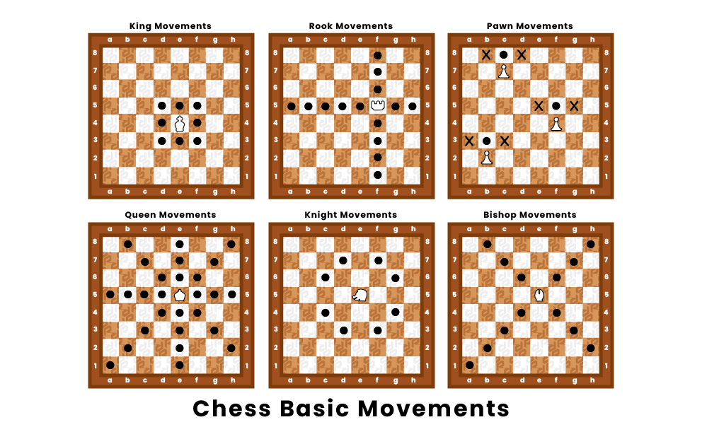

| King | Queen | Rook | Knight | Bishop | Pawn |
|---|---|---|---|---|---|
| NC | 9 | 5 | 3 | 3 | 1 |
NC -- Not Capturable
For basic checkmate patterns refer this link : Checkmate Patterns
The king moves one square in any direction. There is also a special move called castling that involves moving the king and a rook. The king is the most valuable piece—attacks on the king must be immediately countered, and if this is impossible, the game is immediately lost (see Check and checkmate below).
A rook can move any number of squares along a rank or file, but cannot leap over other pieces . Along with the king, a rook is involved during the king's castling move.
A bishop can move any number of squares diagonally, but cannot leap over other pieces.
A queen combines the power of a rook and bishop and can move any number of squares along a rank, file, or diagonal, but cannot leap over other pieces.
A knight moves to any of the closest squares that are not on the same rank, file, or diagonal. (Thus the move forms an "L"-shape: two squares vertically and one square horizontally, or two squares horizontally and one square vertically.) The knight is the only piece that can leap over other pieces.
A pawn can move forward to the unoccupied square immediately in front of it on the same file, or on its first move it can advance two squares along the same file, provided both squares are unoccupied (black dots in the diagram). A pawn can capture an opponent's piece on a square diagonally in front of it by moving to that square (black crosses). It cannot capture a piece while advancing along the same file. A pawn has two special moves: the en passant capture and promotion.